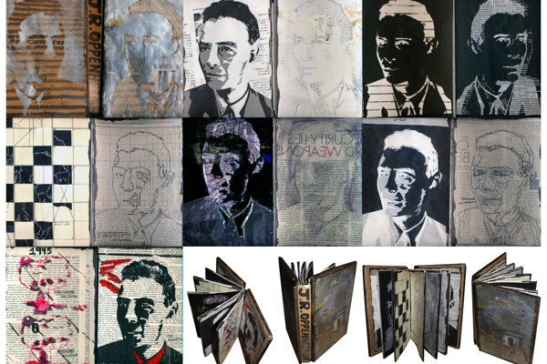
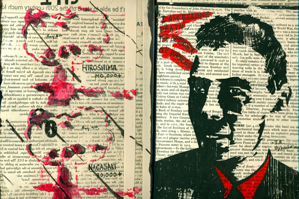
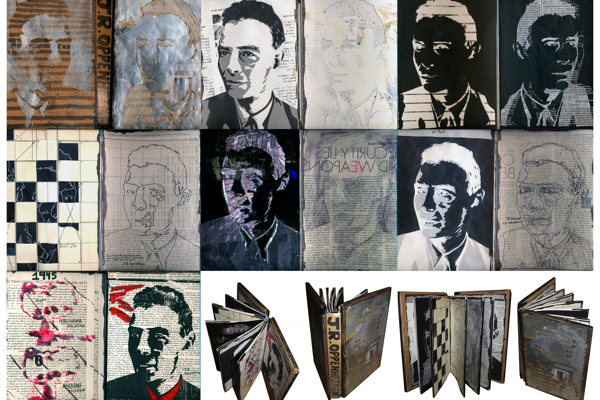
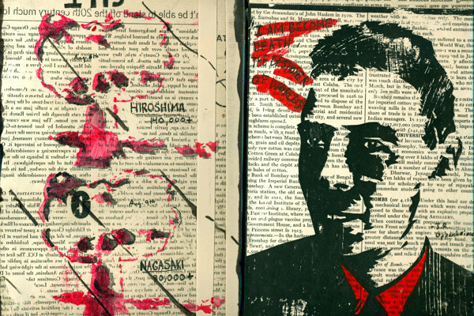

J.R. Oppenihiemer Handmade Book
Once I selected a prominent historical figure I began to heavily research J. Robert Oppenheimer's life. I set out to portray him from a young man to a weathered old one. To depict the cost of the advent atom bomb.